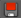

您可以缓存 BOSS 解算器的效果。通过避免重新计算每一帧的复杂模拟，这样可以改进播放。默认情况下，缓存将作为 EXR 文件存储在磁盘上的项目目录 cache/Boss/ 文件夹的子文件夹中。
还可以缓存几何体影响。例如，如果已完成一艘船的动画，则可对其进行缓存，从而避免对将保持不变的内容重新采样。缓存生成器影响之后，您仍可调整其“振幅”(Amplitude)。
创建或替换解算器或影响的缓存
在“BOSS 涟漪/波浪解算器”(Boss Ripple/Wave Solver)窗口中选择解算器或影响，然后单击其上方对应的“创建/替换缓存”(Create/Replace Cache)图标  。默认情况下，它使用“时间滑块”(Time Slider)范围，但您可以双击该图标来设置其他选项。
。默认情况下，它使用“时间滑块”(Time Slider)范围，但您可以双击该图标来设置其他选项。
在创建缓存时播放动画，相应的缓存图标将从红色  变为绿色 ，以指示缓存正在使用中。
可使用相同的过程覆盖和替换现有缓存。
禁用缓存
若要停止对解算器或影响使用缓存，请单击其缓存图标，使之从绿色变为红色。这样，您可以更改选项并查看其效果。
如果对新设置感到满意，则可使用更新的结果覆盖缓存。否则，可以单击缓存图标，将其从红色更改回绿色并还原为原始缓存。
持续缓存
“BOSS 涟漪/波浪解算器”(Boss Ripple/Wave Solver)窗口中的“持续缓存”(Cache Continuously)选项可在您调整设置和进行播放时持续写入和覆盖所有解算器（而非影响）的缓存文件。
这有助于获取交互式反馈，例如，在生成泡沫贴图时。